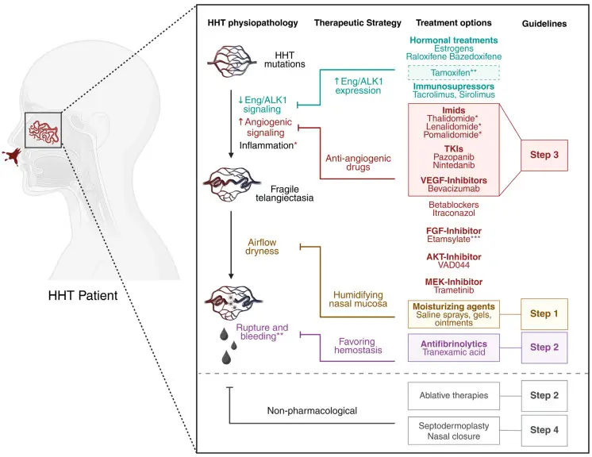
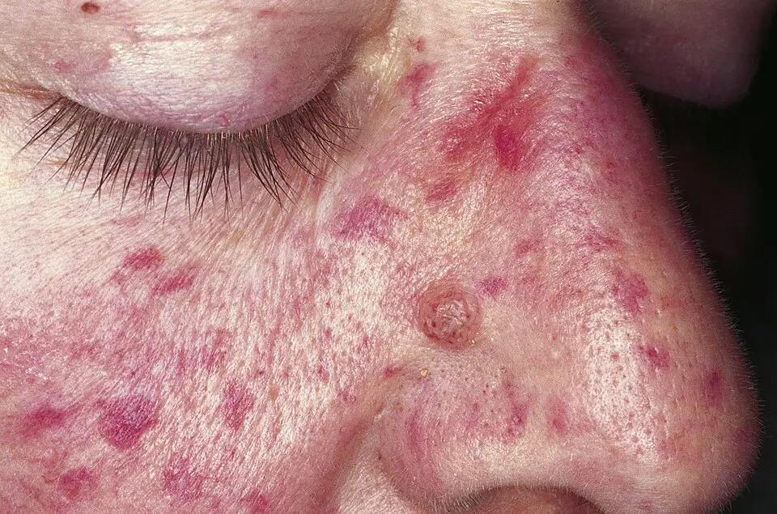
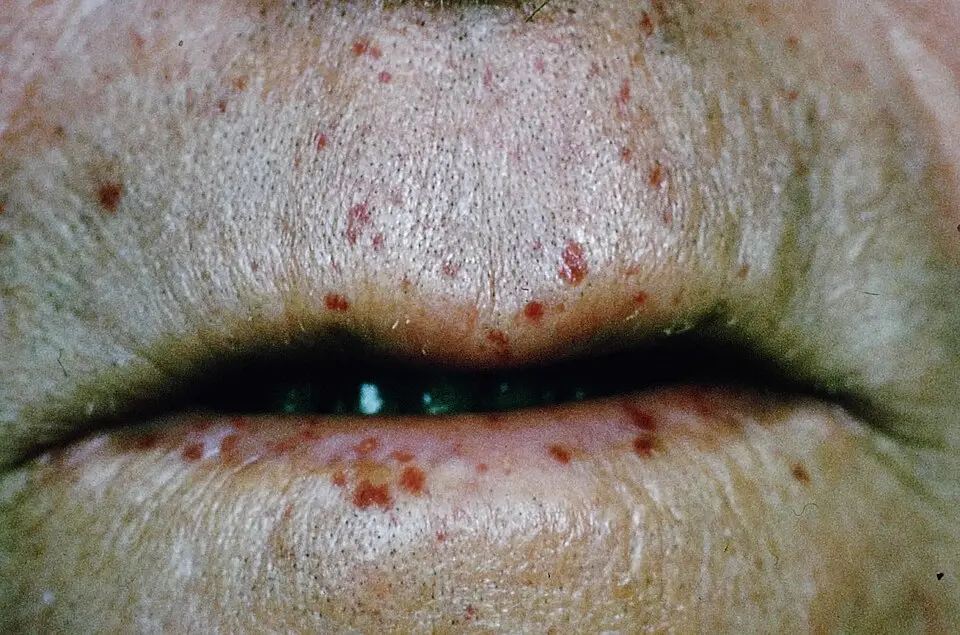

DX.8 — Maladie de Rendu-Osler
La maladie de Rendu-Osler tue rarement par le nez, mais elle tue par ce qu’on ne cherche pas : malformations pulmonaires silencieuses, abcès cérébral, embolie paradoxale et insuffisance cardiaque à haut débitS2S6. Devant des épistaxis répétées, le médecin compte les critères de Curaçao, mesure l’anémie, puis adresse au centre expert pour le dépistage viscéralS2S8.
1. Définition
Le protocole national de diagnostic et de soins (PNDS) français a été actualisé en août 2024 par le centre de référence, puis validé par la Haute Autorité de santéS2. Il définit la maladie de Rendu-Osler comme une maladie vasculaire héréditaire rare mais ubiquitaireS2. Elle résulte de la perte de fonction de gènes de la voie de signalisation BMP9/BMP10 (protéines morphogénétiques osseuses 9 et 10), surtout ENG, ACVRL1 et SMAD4S2. Cette perte produit des télangiectasies cutanéomuqueuses et des malformations artérioveineuses (MAV) de plus gros calibre, surtout pulmonaires, hépatiques et cérébralesS2. La transmission est autosomique dominanteS4.
2. Épidémiologie (Suisse, puis Europe)
La Revue Médicale Suisse indique une prévalence comprise entre 1 sur 5000 et 1 sur 10 000 habitants, avec une expression très variable au sein d’une même familleS3. L’Hôpital de l’Île à Berne (Inselspital), qui se décrit comme centre national de référence, retient une prévalence de 1 sur 5000 à 8000S6. Selon le PNDS français, la fréquence est d’environ 1 sur 6000 naissancesS2. La maladie touche autant les hommes que les femmesS1. Les chiffres de fréquence, l’histoire naturelle et l’enjeu de santé publique expliquent le retard diagnostique habituelS4.
Chiffres de fréquence, de la Suisse à l’Europe
Les chiffres divergent un peu, car chaque source estime une maladie sous-diagnostiquée à partir de cohortes différentesS3S6.
| Chiffre | Population | Année | Source |
|---|---|---|---|
| Prévalence de 1/5000 à 1/10 000 | Population générale, revue suisse | 2016 | Revue Médicale Suisse, GenèveS3 |
| Prévalence de 1/5000 à 1/8000 | Population générale, prise de position européenne | 2021 | Inselspital, BerneS6 |
| Environ 1/6000 naissances | France | 2024 | PNDSS2 |
| 16 patients sur 72 (22,2 %) porteurs de MAV pulmonaires | Cohorte vaudoise de 2000 à 2011 | 2015 | Centre hospitalier universitaire vaudois (CHUV)S5 |
| Environ 50 % de MAV pulmonaires | Patients atteints, centres français | 2024 | PNDSS2 |
| 40 à 70 % de MAV hépatiques, symptomatiques dans moins de 10 % des cas | Patients atteints | 2024 | PNDSS2 |
| Jusqu’à 50 % d’anémie par carence martiale | Patients atteints | 2024 | PNDSS2 |
| Plus de 90 % d’épistaxis au cours de la vie | Patients atteints | 2025 | Revue européenneS10 |
La cohorte vaudoise compte moins de MAV pulmonaires que le PNDS, car les deux chiffres décrivent des populations et des périodes différentesS5S2.
Histoire naturelle
L’âge d’apparition et la sévérité varient d’un individu à l’autre, y compris dans une même familleS2. La pénétrance dépend de l’âge, si bien qu’un enfant d’un parent atteint reste à risque même avec peu de signesS8. Les épistaxis de l’enfance persistent ou apparaissent à l’âge adulte, où elles deviennent souvent plus fréquentes et plus sévèresS10.
Les MAV pulmonaires évoluent à l’adolescence, et de très petites lésions peuvent alors devenir significativesS2. Pendant la grossesse, elles peuvent grossir et mettre en jeu le pronostic vital maternel et fœtal dans 1 à 2 % des casS2. Les MAV hépatiques retentissent surtout sur le cœur, de façon progressive et donc trompeuseS2.
Enjeu de santé publique
Le diagnostic est souvent retardé, car la maladie est rare et ses manifestations sont dispersées entre plusieurs spécialitésS4. Le CHUV a donc proposé un programme multidisciplinaire standardisé, qui dépiste régulièrement les MAV viscéralesS4. Chaque diagnostic ouvre un dépistage familial, puisque chaque enfant d’un parent atteint a un risque de transmission de 50 %S2.
Aucun médicament n’a reçu d’autorisation de l’Agence européenne des médicaments pour les épistaxis de la maladie, ce qui impose des usages hors indication encadrésS10.
3. Physiopathologie
Le raisonnement exige une base à connaître sur la paroi vasculaire et la télangiectasie. La voie BMP9/BMP10 maintient les cellules endothéliales dans un état quiescent et mature ; sa perte lève ce frein sur l’angiogenèseS2. Le gène ACVRL1 permet la synthèse d’ALK1, récepteur de haute affinité de BMP9 et BMP10 ; ENG porte l’endogline, son corécepteur endothélialS2. Ces deux gènes expliquent à eux seuls environ 90 % des casS2.
Base à connaître — paroi vasculaire et télangiectasie
De la mutation au saignement nasal. Le schéma de synthèse montre la muqueuse nasale du patient et la chaîne qui mène au saignement.

Lisez d'abord seul ce cliché (de la mutation au saignement nasal) : cherchez vous-même le signe.
La copie annotée (de la mutation au saignement nasal) porte les repères décrits ci-dessous.
- Repère un. Le réseau vasculaire dessiné en haut représente la microcirculation où agit la mutation.
- Repère deux. La télangiectasie fragile relie directement artère et veine, sans lit capillaire intermédiaire.
- Repère trois. La paroi, desséchée par le flux d’air, se rompt et laisse saigner la muqueuse.
- Repère quatre. Les étapes de la colonne de droite placent les soins hydratants avant les antifibrinolytiques.
- La cautérisation ne figure pas parmi les premières étapes, car elle détruit la muqueuse et perfore la cloison.
Ce que l'image décide. Le schéma justifie l’ordre du traitement : hydrater la muqueuse, favoriser l’hémostase, puis réserver ablations et antiangiogéniques au centre expert.
Normalement, un lit capillaire sépare l’artériole de la veinule. Dans la maladie, ce lit disparaît : artère et veine communiquent directement, en petit calibre dans la télangiectasie et en gros calibre dans la MAVS10S2.
La télangiectasie nasale saigne parce que sa paroi est fragile et superficielle ; l’air dessèche l’épithélium, les croûtes la fissurent, puis la paroi se romptS10. C’est pourquoi l’humidification de la muqueuse réduit le saignement, alors que la cautérisation détruit la cloisonS10S2.
Dans le poumon, la MAV forme un court-circuit droite-gauche, qui laisse passer vers le cerveau caillots, bulles et bactériesS6S2. Le piège consiste à croire la maladie limitée au nez, alors que la même lésion siège dans le poumon, le foie, le cerveau et le tube digestifS2.
La chaîne pathologique va du gène à la lésion visible, puis à la complication ; chaque maillon se relie à un examen et à un traitement. Le gène SMAD4 transmet le signal dans la cellule ; son atteinte, plus rare, associe la maladie à une polypose juvénile et à un risque de cancer digestifS2.
Chaîne pathologique et corrélation
L’amorce est génétique, le développement est angiogénique, l’installation est vasculaire et le maintien tient aux pertes sanguines répétéesS2S6.
| Perturbation | Exploration qui la montre | Thérapeutique et mécanisme |
|---|---|---|
| Variant pathogène ENG, ACVRL1, SMAD4 ou GDF2 | Séquençage d’un panel de gènesS2 | Dépistage ciblé des apparentés porteursS2 |
| Télangiectasie nasale fragile | Examen ORL (oto-rhino-laryngologique) qui compte les lésionsS2 | Humidification ; acide tranexamique, qui freine la fibrinolyse localeS2S11 |
| Pertes chroniques en fer | Numération sanguine et ferritineS2 | Fer oral, puis fer intraveineuxS2 |
| Angiogenèse excessive entretenue par le VEGF (facteur de croissance de l’endothélium vasculaire) | Besoin transfusionnel ou en fer intraveineuxS2 | Bévacizumab, anticorps anti-VEGFS2 |
| Court-circuit droite-gauche pulmonaire | Échocardiographie de contraste, puis scanner thoraciqueS2 | Vaso-occlusion de l’artère afférenteS2S5 |
| Court-circuit intrahépatique | Écho-Doppler hépatique et débit cardiaqueS2 | Traitement de l’insuffisance cardiaque, bévacizumab ou greffeS2 |
La carence martiale entraîne en outre un état prothrombotique, par élévation du facteur VIII et hyperplaquettoseS2.
4. Démarche diagnostique
Devant une épistaxis récidivante, le médecin élimine d’abord les rangs d’exclusion, qui tuent plus vite : un antithrombotique (🚩 E1), une thrombopénie immunologique (🚩 E2) ou un cancer naso-sinusien (🚩 E3). Il évoque ensuite Rendu-Osler quand l’histoire familiale et les télangiectasies s’ajoutent au saignementS2S8. Les diagnostics discriminants se tranchent chacun par un signe ou un examen précis.
Diagnostics discriminants
| Diagnostic | Élément qui tranche | Piège | Conduite si positif |
|---|---|---|---|
| Épistaxis sous antithrombotique (DX.2) | Le traitement figure sur l’ordonnance | La maladie de Rendu-Osler aggrave aussi les saignements sous antithrombotiqueS2 | Avis du centre expert avant toute poursuiteS2 |
| Thrombopénie immunologique (DX.6) | Purpura et plaquettes basses | Une télangiectasie pâlit à la pression, une pétéchie ne pâlit pas | Voir le cours DX.6 |
| Maladie de von Willebrand (DX.7) | Saignements muqueux familiaux sans télangiectasie | L’histoire familiale existe dans les deux maladies | Voir le cours DX.7 |
| Phénotypes voisins EPHB4 ou RASA1 | Panel génétique élargi | Leur expression ressemble parfois à la maladieS2 | Conseil génétique en centreS2 |
Une épistaxis unilatérale avec obstruction fait chercher une lésion locale, même chez un patient porteur connu, car la persistance d’un symptôme unilatéral impose l’endoscopie (DX.10).
Erreur classique. Un homme de 40 ans consulte pour sa quatrième épistaxis de l’année, et le débutant la cautérise encore sans regarder les lèvres, la langue ni les doigtsS2. Or des épistaxis spontanées et répétées, des télangiectasies labiales et un père atteint réunissent trois critères de Curaçao, donc un diagnostic certainS2S8. La conduite change alors : on renonce à la cautérisation, qui perfore la cloison, et l’on dépiste une MAV pulmonaire, qui commande l’antibioprophylaxie avant les soins dentairesS2.
Chez un patient déjà diagnostiqué, la gravité vient autant des viscères que du nez. Les alarmes situationnelles orientent alors vers le poumon, le cerveau, le foie ou le tube digestifS2.
Alarmes situationnelles chez un patient atteint
- Un déficit neurologique, une crise convulsive ou une céphalée fébrile font rechercher une embolie paradoxale ou un abcès cérébral issu d’une MAV pulmonaireS2S6.
- Une hémoptysie ou une douleur thoracique pendant la grossesse font évoquer une rupture de MAV pulmonaireS2.
- Une dyspnée avec œdèmes oriente vers une insuffisance cardiaque à haut débit d’origine hépatiqueS2.
- Une anémie inexpliquée ou subitement aggravée impose de chercher un saignement digestifS2.
5. Anamnèse ciblée et drapeaux rouges
L’anamnèse mesure d’abord les épistaxis en fréquence, durée et intensité, car le score de sévérité guide l’escalade thérapeutiqueS2S10. Elle recherche ensuite les signes d’anémie, les signes cardiorespiratoires, les signes digestifs et les signes neurologiquesS2. Elle termine par les antécédents personnels et familiaux, puis par les médicaments.
Épistaxis — caractérisation
Le siège est nasal, souvent bilatéral, car les télangiectasies tapissent les deux fosses nasalesS2. Le saignement survient spontanément ou après mouchage, éternuement, antéflexion, effort ou stressS10. La chaleur, l’alcool vasodilatateur et le mouchage fort l’aggravent ; l’humidification et le corps gras le réduisentS2.
Le patient décrit des épisodes répétés, parfois plusieurs fois par jour et pendant plusieurs heures, jusqu’à l’instabilité hémodynamiqueS10. Le score de sévérité des épistaxis compte six éléments : fréquence, durée, intensité, recours médical, anémie et transfusionS10.
L’épistaxis est typique de la maladie quand elle est spontanée, répétée et familiale ; elle devient atypique si elle est unilatérale avec obstruction, ce qui impose de chercher une lésion localeS2S8.
Signes d’anémie et de carence martiale
La carence martiale diminue la qualité de vie avant même l’anémie : asthénie, syndrome des jambes sans repos et fragilité des phanèresS2. L’anamnèse compte les transfusions de globules rouges et les cures de fer oral ou intraveineux déjà reçuesS2.
Ces signes sont typiques quand les épistaxis sont abondantes ; ils deviennent atypiques si l’anémie dépasse les pertes nasales, ce qui oriente vers le tube digestifS2.
Signes cardiorespiratoires
Le médecin demande palpitations, dyspnée et hémoptysie, car elles signalent une MAV pulmonaire ou un retentissement cardiaqueS2. Les MAV pulmonaires restent cependant souvent muettes sur le plan respiratoire ; leur absence de symptôme ne rassure donc pasS2.
Une dyspnée progressive avec œdèmes et douleur de l’hypocondre droit évoque une MAV hépatique à haut débit cardiaqueS2. Ce tableau est atypique pour un adulte jeune, car le retentissement cardiaque s’installe lentementS2.
Antécédents personnels, familiaux et médicaments
Le médecin recherche les infections sévères anciennes : abcès cérébraux ou viscéraux, ostéites, septicémiesS2. Il interroge sur la maladie, les épistaxis récurrentes et les néoplasies digestives chez les apparentésS2. Il relève enfin les antithrombotiques, tout projet de grossesse et toute intervention prévueS2.
Chaque drapeau rouge impose une action précise, souvent le jour même.
Drapeaux rouges
| Drapeau rouge | Signification | Action immédiate |
|---|---|---|
| Épistaxis prolongée ou à fort débit avec malaise | Choc hémorragique possible | Compression, méchage résorbable, voie veineuse ; voir la conduite d’urgenceS2 |
| Déficit neurologique, convulsion | Embolie paradoxale ou abcès cérébralS2 | Imagerie cérébrale urgente et recherche de MAV pulmonaireS2 |
| Céphalée fébrile inhabituelle | Abcès cérébral si MAV pulmonaireS2 | Imagerie cérébrale et avis neurochirurgical urgents |
| Hémoptysie ou douleur thoracique pendant la grossesse | Rupture de MAV pulmonaireS2 | Prise en charge urgente ; scanner quel que soit le terme si hypoxémieS2 |
| Méléna, anémie brutalement aggravée | Saignement digestifS2 | Gastroscopie puis coloscopieS2 |
| Dyspnée, œdèmes, souffle hépatique | Haut débit cardiaque d’origine hépatiqueS2 | Échocardiographie avec débit cardiaqueS2 |
6. Examen physique ciblé, région par région
L’examen suit un ordre fixe chez un patient porteur de la maladieS2. Il commence par les constantes et la saturation, puis inspecte le visage, les lèvres et la bouche et les mains. Il examine ensuite les fosses nasales, le thorax, l’abdomen et le système nerveux. Chez l’enfant, la croissance et l’auscultation crânienne complètent le temps neurologiqueS2.
Constantes et saturation en position assise puis couchée
Signe. Le médecin recherche une désaturation et une orthodéoxie, c’est-à-dire une saturation plus basse assis que couchéS2.
Geste. Il mesure la saturation transcutanée en oxygène en position assise, puis couchée, et note poids, taille et pression artérielleS2.
Aspect. Une saturation basse ou une orthodéoxie traduisent un court-circuit droite-gauche pulmonaireS2S6. Une saturation normale n’exclut pas une MAV, car beaucoup sont asymptomatiquesS2.
Visage
Signe. Le médecin cherche des macules rouges planes, rondes ou étoilées, de petite tailleS2.
Geste. Il presse la lésion avec une lame de verre : la télangiectasie pâlit puis se recolore, ce qui la distingue d’une pétéchie.
Aspect. La photographie montre des lésions multiples du nez et de la joue, sans battement.
Télangiectasies faciales. La photographie clinique rapprochée montre la joue et la pyramide nasale.

Lisez d'abord seul ce cliché (télangiectasies faciales) : cherchez vous-même le signe.
La copie annotée (télangiectasies faciales) porte les repères décrits ci-dessous.
- Repère un. Des macules planes et étoilées de un à trois millimètres couvrent la face latérale du nez.
- Repère deux. Les lésions de la joue sont nombreuses et ne battent pas, ce qui les distingue des angiomes stellaires.
- Repère trois. La papule ronde de l’aile du nez est une lésion distincte et ne compte pas comme télangiectasie.
- Une couperose rosacée est faite de vaisseaux linéaires diffus, et non de macules rondes bien limitées.
Ce que l'image décide. Des télangiectasies faciales multiples confortent le diagnostic mais ne dispensent ni de la numération sanguine ni de la recherche de malformations pulmonaires.

Lèvres, langue et muqueuse buccale
Signe. Les lèvres et la langue sont des sièges de prédilection du critère cutanéomuqueuxS2.
Geste. Le médecin éclaire la bouche, fait tirer la langue et inspecte les faces internes des lèvres.
Aspect. Les lésions forment un semis de points rouges de taille inégale sur le vermillon et la peau périlabiale.
Télangiectasies labiales. La photographie clinique montre les lèvres de face, entrouvertes, en lumière directe.

Lisez d'abord seul ce cliché (télangiectasies labiales) : cherchez vous-même le signe.
La copie annotée (télangiectasies labiales) porte les repères décrits ci-dessous.
- Repère un. Une macule rouge vif de la lèvre supérieure siège sur la peau périlabiale et mesure quelques millimètres.
- Repère deux. Les lésions du vermillon inférieur forment un semis de points rouges de taille inégale.
- Repère trois. Une petite télangiectasie est visible sur la muqueuse labiale, site typique du critère cutanéomuqueux.
- Une pétéchie ne pâlit pas à la vitropression, alors que la télangiectasie pâlit puis se recolore.
- Un seul point rouge isolé ne suffit pas : le critère exige plusieurs lésions sur un site caractéristique.
Ce que l'image décide. Plusieurs télangiectasies labiales valent un critère de Curaçao ; associées à des épistaxis répétées, elles imposent de chercher un troisième critère et d'adresser au centre.

Mains et doigts
Signe. Les doigts portent souvent des télangiectasies, au même titre que les lèvres et la langueS2S6.
Geste. Le médecin recherche les lésions sur la face palmaire des doigts et autour des ongles en bonne lumière.
Aspect. Les lésions ressemblent à celles des lèvres ; la cyanose des extrémités signale en outre une hypoxémie chroniqueS2.
Fosses nasales
Signe. Le médecin ORL compte les lésions muqueuses, note leur siège et recherche une perforation de la cloisonS2.
Geste. L’examen reste doux, car toute introduction d’écouvillon ou de sonde peut déclencher une épistaxisS2.
Aspect. Une perforation septale oriente vers des cautérisations antérieures, qui dévascularisent la cloison ; le cours DX.5 détaille cette lésionS2.
Thorax et cœur
Signe. Le médecin cherche un souffle thoracique, un souffle cardiaque et des signes d’insuffisance cardiaqueS2.
Geste. Il ausculte le cœur, puis les deux champs pulmonaires en regard des bases.
Aspect. Un souffle thoracique évoque une MAV pulmonaire ; son absence n’exclut rien, car ces lésions restent souvent muettesS2.
Abdomen
Signe. Le médecin recherche un souffle artériel en regard du foieS2.
Geste. Il ausculte l’hypocondre droit, puis palpe le foie et cherche une ascite.
Aspect. Un souffle hépatique traduit un court-circuit intrahépatique ; l’ascite et les varices signalent une hypertension portale, plus rareS2.
Système nerveux
Signe. Le médecin recherche un signe de localisation : déficit moteur, sensitif, phasique ou visuelS2.
Geste. Il réalise un examen neurologique complet et rapide.
Aspect. Un déficit focal chez un patient porteur fait évoquer une embolie paradoxale avant une cause athéromateuseS2S6.
7. Approche syndromique
Cinq syndromes résument la maladie ; le syndrome hémorragique muqueux domine, mais les syndromes de court-circuit décident du pronosticS2S6. Le tableau des syndromes sépare signes fonctionnels et signes physiques.
7.1 Syndrome hémorragique muqueux chronique
Les épistaxis et les saignements digestifs entraînent une carence martiale, puis une anémie ferripriveS6.
7.2 Syndrome de court-circuit pulmonaire droite-gauche
Il associe dyspnée, hypoxémie et orthodéoxie ; il peut rester muet jusqu’à l’accident ischémique ou l’abcès cérébralS6S2.
7.3 Syndrome de haut débit d’origine hépatique
Il réalise une insuffisance cardiaque à haut débit, parfois compliquée d’hypertension pulmonaire, d’hypertension portale ou de nécrose biliaireS2.
7.4 Syndrome neurologique
Il réunit convulsions et accidents vasculaires ischémiques ou hémorragiques, issus d’une MAV cérébrale ou d’une embolie paradoxaleS6.
7.5 Syndrome hémorragique digestif
Les angiodysplasies saignent de façon chronique ou aiguë ; elles se révèlent par une anémie qui dépasse les pertes nasalesS2.
Signes fonctionnels et physiques par syndrome
| Syndrome | Signes fonctionnels | Signes physiques |
|---|---|---|
| 7.1 Hémorragique muqueux | Épistaxis, asthénie, jambes sans reposS2 | Pâleur, télangiectasies nasales, phanères fragilesS2 |
| 7.2 Court-circuit pulmonaire | Dyspnée, hémoptysie, migraineS2 | Cyanose, désaturation assise, souffle thoraciqueS2 |
| 7.3 Haut débit hépatique | Dyspnée, œdèmes, douleur de l’hypocondre droitS2 | Souffle hépatique, signes d’insuffisance cardiaqueS2 |
| 7.4 Neurologique | Céphalée brutale, convulsionS2 | Déficit focal, trouble de vigilanceS2 |
| 7.5 Digestif | Méléna, rectorragies, hématémèseS2 | Pâleur, anémie disproportionnéeS2 |
Carence martiale — définition et mécanisme
La carence martiale désigne l’épuisement des réserves en fer ; elle se dose par la ferritine sérique, en l’absence d’inflammationS2. Le risque augmente avec l’âge, le sexe féminin, les épistaxis importantes, l’atteinte digestive et les génotypes ACVRL1 et SMAD4S2.
Orthodéoxie — définition et geste
L’orthodéoxie est une baisse de la saturation en oxygène quand le patient passe de la position couchée à la position assiseS2. Le médecin la recherche en comparant les deux mesures au repos, après quelques minutes dans chaque position. Elle signale un court-circuit droite-gauche pulmonaire et impose la recherche d’une MAVS2S6.
8. Diagnostic positif et critères
Les critères de Curaçao, publiés en 2000 par un comité international d’experts, fondent le diagnostic cliniqueS8. Le PNDS de 2024 les reprend sans changement, avec quatre critères et trois niveaux de certitudeS2. La Revue Médicale Suisse confirme ensuite le diagnostic par l’analyse génétiqueS3.
Critères de Curaçao
| Critère | Contenu exigé |
|---|---|
| Épistaxis | Spontanées et répétéesS2 |
| Télangiectasies | Multiples, sur les lèvres, la langue, les doigts ou le nezS2 |
| Atteinte viscérale | MAV pulmonaire, hépatique, cérébrale ou spinale, ou angiodysplasie digestiveS2 |
| Histoire familiale | Un apparenté du premier degré atteint selon ces mêmes critèresS2 |
Ce qui ne suffit pas mérite d’être su : une épistaxis seule ne vaut qu’un critère, et un faible compte clinique n’exclut pas la maladieS2S8. Dans une série britannique de 152 adultes génétiquement confirmés, seuls 104 (68 %) remplissaient trois critères de CuraçaoS9. Parmi 83 porteurs de MAV pulmonaire, 20 (24 %) n’avaient presque aucun autre signe de la maladieS9. Une seule MAV pulmonaire justifie donc de proposer le test génétiqueS9.
La confirmation génétique et les scores de suivi complètent la clinique sans la remplacer.
Confirmation génétique
Le PNDS propose un séquençage à haut débit d’un panel incluant ACVRL1, ENG, SMAD4 et GDF2 à tout patient qui réunit au moins deux critèresS2. Le panel comprend de préférence EPHB4 et RASA1, dont le phénotype ressemble parfois à la maladieS2. Si le panel reste négatif dans une famille de plusieurs malades certains, une étude du génome complet peut être proposéeS2.
L’Inselspital décrit la classification génétique : l’atteinte ENG définit le type 1, l’atteinte ACVRL1 le type 2S6. Le variant familial se recherche chez tout apparenté du premier degré, même asymptomatiqueS2.
Scores et classifications utiles
Le score de sévérité des épistaxis se calcule à partir de six réponses du patient, pondérées puis ramenées sur dixS10. Il suit l’effet d’un traitement, car la sévérité varie naturellement beaucoup d’un mois à l’autreS10S2. La classification de Buscarini indique la gravité de l’atteinte hépatique d’après les diamètres vasculaires mesurés à l’écho-DopplerS2.
9. Examens complémentaires
Le bilan répond à trois questions : le patient saigne-t-il trop, porte-t-il une MAV dangereuse, et sa famille est-elle concernéeS2 ? Chaque examen possède une fenêtre qui donne valeurs, interprétation et pièges.
9.a Gold standard
Le diagnostic reste clinique, par les critères de Curaçao ; la mise en évidence d’un variant pathogène le confirme quand la clinique est incomplèteS2S1. Pour la MAV pulmonaire, le scanner thoracique sans injection fait référence après une échographie de contraste positiveS2.
9.b Première intention
Le médecin prescrit chez tout adulte une numération sanguine avec ferritine, puis une échocardiographie de contraste pour dépister les MAV pulmonairesS2. Le bilan initial ajoute un écho-Doppler hépatique avec échocardiographie, qui mesure débit cardiaque et pression pulmonaireS2.
9.c Alternatives
Les alternatives selon le terrain s’appliquent à l’enfant, à la femme enceinte et au patient déjà traitéS2. Le scanner thoracique se fait sans produit de contraste, ce qui le rend possible malgré une insuffisance rénale ou une allergie à l’iodeS2.
9.d Deuxième intention
L’IRM cérébrale et spinale se discute après information, car son bénéfice de dépistage n’est pas démontréS2. L’exploration digestive ne se fait que devant un signe d’appel, et l’analyse génétique organise le dépistage familialS2.
Numération sanguine et ferritine
Indication. Le PNDS les demande systématiquement chez l’adulte, pour rechercher anémie et carence martialeS2.
Interprétation. La carence se retient sur la ferritine basse, hors syndrome inflammatoire ; le seuil proposé est généralement d’au moins 25 µg/L, adapté à l’âge, au sexe et aux comorbiditésS2.
Piège. L’hémoglobine baisse avec plusieurs heures de retard sur une épistaxis abondante ; une valeur précoce rassurante ne dispense pas de surveillerS2.
Échocardiographie de contraste
Indication. Elle dépiste en première intention les MAV pulmonaires chez tout patient nouvellement diagnostiquéS2.
Interprétation. Le médecin injecte des microbulles dans une veine et cherche leur passage tardif dans les cavités gauches, signe d’un court-circuit pulmonaire. Si l’examen est négatif dans de bonnes conditions, le scanner n’est pas nécessaireS2.
Piège. Un examen positif sans MAV visible au scanner impose quand même l’antibioprophylaxie dentaireS2. L’examen exige un médecin expérimentéS2.
Scanner thoracique volumique basse dose
Indication. Le scanner suit une échographie positive ou irréalisable, ou des signes évocateurs de MAV pulmonaireS2.
Prescription. Il s’agit d’un scanner volumique basse dose sans injection, reconstruit en projection d’intensité maximale et en coupes multiplanaires, surtout sagittalesS2.
Interprétation. La MAV apparaît comme un sac relié à une artère afférente et à une veine efférente ; après occlusion, une veine efférente d’au moins 2,5 mm signe une reperméabilisationS2.
Piège. Les spirales métalliques gênent la lecture ; l’angio-IRM aide alors à juger une occlusion douteuseS2.
Écho-Doppler hépatique et échocardiographie
Indication. Les recommandations internationales et l’Association européenne pour l’étude du foie le placent en première intention chez l’adulteS2.
Interprétation. Le radiologue mesure les diamètres vasculaires selon Buscarini ; l’échocardiographie évalue débit cardiaque, index cardiaque, fonction ventriculaire gauche et probabilité d’hypertension pulmonaireS2. Un cathétérisme droit confirme une hypertension pulmonaire en centre spécialiséS2.
Biologie. Les gamma-GT et les phosphatases alcalines recherchent une cholestase ; une cytolyse majeure fait chercher une autre maladieS2.
Piège. La biopsie hépatique est en général contre-indiquée, à cause du risque hémorragiqueS2.
IRM cérébrale et spinale
Indication. Elle peut être proposée après information sur les risques des traitements, sans bénéfice démontré du dépistageS2. Les recommandations européennes et internationales divergent sur ce pointS2.
Interprétation. Une MAV découverte se discute en réunion de concertation pluridisciplinaire, car son risque hémorragique est faibleS2.
Piège. Le PNDS ne recommande plus d’IRM spinale avant une première grossesse ni avant une périduraleS2.
Exploration digestive
Indication. Elle se justifie devant une hémorragie extériorisée, ou devant une anémie ou une carence inexpliquée ou subitement aggravéeS2.
Prescription. Elle comprend une gastroscopie et une coloscopie, complétées si besoin par une vidéocapsuleS2.
Piège. Le dépistage systématique des angiodysplasies n’apporte aucun bénéfice démontré ; seule l’atteinte SMAD4 impose une surveillance endoscopique tous les 1 à 3 ans dès 12 à 15 ansS2.
Analyse génétique
Indication. Elle confirme un diagnostic certain ou possible et permet le test ciblé des apparentésS2.
Interprétation. La découverte du variant familial chez un apparenté asymptomatique justifie la recherche ciblée des complications viscéralesS2.
Piège. Un test négatif ne permet pas d’exclure la maladie si aucun variant familial n’est connuS9S2.
Alternatives selon le terrain
| Terrain | Examen à préférer | Raison |
|---|---|---|
| Enfant asymptomatique | Échocardiographie de contraste avant l’adolescence ; scanner basse dose si positive ou irréalisableS2 | Les premières complications apparaissent à l’adolescenceS2 |
| Enfant symptomatique ou désaturé | Scanner basse dose sans injection d’embléeS2 | La recherche devient systématiqueS2 |
| Grossesse asymptomatique | Échocardiographie de contraste ou scanner basse dose, idéalement au début du deuxième trimestreS2 | Les MAV pulmonaires grossissent pendant la grossesseS2 |
| Grossesse avec hypoxémie | Scanner basse dose quel que soit le termeS2 | Le pronostic maternel et fœtal est en jeuS2 |
| MAV déjà connue ou échographie déjà positive | Scanner thoracique, sans nouvelle échographie de contrasteS2 | L’échographie restera positiveS2 |
| Foie de l’enfant | Aucun écho-Doppler systématiqueS2 | Le dépistage n’est pas justifié à cet âgeS2 |
10. Arbre décisionnel
L’arbre traite d’abord ce qui tue en minutes, puis ce qui tue en silence, et enfin ce qui épuise le patientS2.
- Si l’épistaxis est abondante ou mal tolérée, le médecin applique la conduite d’urgence sans cautérisation ni mèche non résorbableS2.
- Si un déficit neurologique, une convulsion ou une céphalée fébrile apparaissent, il demande une imagerie cérébrale urgente et cherche une MAV pulmonaireS2.
- Après l’hémostase, il élimine les rangs 🚩 E1 à E3 et compte les critères.
- Si le diagnostic est retenu, il prescrit numération, ferritine, échocardiographie de contraste et écho-Doppler hépatiqueS2.
- Si les épistaxis persistent malgré l’humidification et l’acide tranexamique, le centre expert choisit un geste ORL spécialiséS2.
- Si le patient dépend des transfusions ou du fer intraveineux, le centre discute le bévacizumabS2.
11. Prise en charge selon les recommandations suisses
Les Hôpitaux universitaires de Genève (HUG) confient la prise en charge à une équipe multidisciplinaire : hématologue, ORL, pneumologue, cardiologue, gastro-entérologue, radiologue, neurologue et généticienS1. L’Inselspital, centre national de référence, organise ses propres programmes et se relie au réseau européen VASCERNS6. Les recommandations internationales de 2020, adoptées par la Société européenne d’hématologie, complètent le PNDSS6S7.
11.A But chiffré
Le traitement vise à normaliser la ferritine au-delà du seuil de carence, à supprimer la dépendance transfusionnelle et à occlure chaque MAV pulmonaire accessibleS2. L’occlusion est possible dès une artère afférente de 1 mm de diamètre ; la règle ancienne des 3 mm est abandonnéeS2. Le suivi en centre expert a lieu au moins tous les 2 ans, même en état stableS2.
11.B Moyens
Une épistaxis grave suit une conduite chronologique d’urgence, qui évite les gestes délabrantsS2. Hors urgence, le traitement progresse par paliers : soins de muqueuse, acide tranexamique, gestes ORL spécialisés, puis antiangiogéniqueS2.
Urgence — conduite chronologique
Trois urgences menacent le patient : l’épistaxis massive, la complication neurologique d’une MAV pulmonaire et la rupture de MAV pulmonaire pendant la grossesseS2.
Minutes 0 à 10 — épistaxis abondante
- Le patient évacue les caillots, puis comprime les narines entre deux doigts pendant 10 minutes sans relâcher, tête droite ou penchée en avantS2.
- Cette compression échoue souvent si le saignement est postérieur, ce qui impose de passer au méchage sans attendreS2.
- Le soignant mesure pouls, pression artérielle et saturation, puis pose une voie veineuse si le saignement persiste.
Minutes 10 à 60 — hémostase sans aggraver
- L’équipe ORL utilise des matériaux spongieux résorbables ou un dispositif gonflable spécifique ; elle proscrit mèche non résorbable et cautérisationS2.
- L’antibioprophylaxie se discute pour tout geste endonasal et devient indispensable si le méchage dépasse 48 heuresS2.
- L’intubation nasotrachéale et toute sonde nasale sont évitées, car elles déclenchent l’épistaxisS2.
Heures 1 à 24 — retentissement
- Le médecin décide la transfusion selon le contexte, en sachant que l’anémie apparaît avec plusieurs heures de retardS2.
- Si le saignement résiste, l’embolisation sélective ou la ligature des branches de la carotide externe restent exceptionnellesS2.
- Le critère de transfert vers un centre ORL disposant de radiologie interventionnelle est l’échec du méchage résorbable.
Urgence neurologique ou thoracique
- Un déficit focal ou une convulsion font suspecter une embolie gazeuse ou cruorique paradoxale ; l’imagerie cérébrale se fait sans délaiS2.
- Une céphalée fébrile chez un porteur de MAV pulmonaire fait rechercher un abcès cérébral, souvent polymicrobien d’origine buccodentaireS2.
- Chez la femme enceinte, une hémoptysie ou une douleur thoracique évoquent une rupture de MAV ; la vaso-occlusion reste possible pendant la grossesseS2.
Jours suivants — prévoir
Les paliers du traitement des épistaxis s’appuient sur un seul médicament à efficacité démontrée, l’acide tranexamiqueS2. La carence martiale se corrige par le fer oral, puis par le carboxymaltose ferrique intraveineux en cas d’échecS2. L’anémie dépendante des transfusions relève du bévacizumab, et la MAV pulmonaire impose l’amoxicilline avant les soins dentaires à risqueS2.
Paliers du traitement des épistaxis chroniques
- Le patient humidifie l’air, applique une pommade grasse matin et soir et lave son nez au sérum physiologiqueS2.
- Il évite chaleur, mouchage fort, éternuement par le nez et alcool, qui favorisent le saignementS2.
- Le médecin ajoute l’acide tranexamique oral, qui réduit modérément la durée des épistaxisS2.
- Le tacrolimus en pommade a montré son efficacité dans une étude de phase 2 ; le bévacizumab en spray nasal n’est pas recommandéS2.
- Le centre expert choisit ensuite laser, radiofréquence sous-muqueuse, injections sclérosantes, embolisation ou dermoplastie septaleS2.
- L’obstruction nasale de Young se teste d’abord par une obstruction temporaire d’au moins un moisS2.
Aucun essai randomisé ne compare ces techniques à long terme, ce qui justifie la décision au cas par casS2.
Le tableau des médicaments rassemble molécule, dose, voie, durée et contre-indication majeure. Les traitements des MAV viscérales, les antithrombotiques et les situations spéciales complètent la conduite.
Médicaments
| Molécule ® | Dose | Voie et durée | Contre-indication majeure | Extrait AIPS |
|---|---|---|---|---|
| Acide tranexamique, Cyklokapron® (n° 33741) | 2 comprimés à 500 mg trois fois par jourS11 | Orale, 7 jours selon l’AIPSS11 | Antécédent de thrombose, insuffisance rénale sévèreS11 | « En cas de saignements prolongés ou récidivants »S11 |
| Carboxymaltose ferrique, Ferinject® (n° 57851) | Au plus 20 mg de fer/kg par perfusion, sans dépasser 1000 mgS12 | Intraveineuse, doses espacées d’au moins une semaineS12 | Premier trimestre de grossesseS12 | « surcharge en fer avérée »S12 |
| Bévacizumab, Avastin® (n° 56922) | Schéma du PNDS, hors AIPSS2 | Intraveineuse, en centre expertS2 | GrossesseS13 | « Avastin est contre-indiqué pendant la grossesse »S13 |
| Amoxicilline, Amoxicilline Sandoz® (n° 49923) | 3 g en dose unique chez l’adulteS14 | Orale, une heure avant le gesteS14 | Hypersensibilité aux pénicillines ou aux céphalosporinesS14 | « Prophylaxie de l'endocardite »S14 |
Acide tranexamique — Cyklokapron® (comprimés pelliculés à 500 mg, n° 33741)S11
| Indication | L’AIPS retient les épistaxis parmi les hémorragies liées à une fibrinolyse locale accrueS11. |
|---|---|
| Mécanisme | L’antifibrinolytique stabilise le caillot formé sur la télangiectasie ; le PNDS lui reconnaît une efficacité démontréeS2. |
| Dose AIPS | L’AIPS prévoit 2 comprimés pelliculés trois fois par jour pendant 7 jours chez l’adulte ; chez l’enfant, elle fixe 25 mg/kg par doseS11. |
| Divergence | Le PNDS emploie 1 g trois fois par jour, soit la même dose ; un usage prolongé au-delà de 7 jours sort de l’AIPS et relève du centre expertS2. |
| Contre-indications | L’AIPS contre-indique la molécule en cas d’hypercoagulabilité, de CIVD, d’hémorragie sous-arachnoïdienne, d’insuffisance rénale sévère, de thrombose aiguë ou ancienne et de convulsionsS11. |
| Grossesse | L’AIPS écrit : « La prudence est de mise en cas d'emploi pendant la grossesse »S11. |
| Allaitement | La molécule passe dans le lait à environ 1 % de la concentration sérique maternelleS11. |
| Effets indésirables | Nausées, vomissements et diarrhée touchent plus de 5 % des patients et cèdent à la baisse de doseS11. La moitié des patients signale des céphalées dans une étude citée par une revue européenneS10. |
Carboxymaltose ferrique — Ferinject® (n° 57851)S12
| Indication | L’AIPS l’indique chez l’adulte carencé quand le fer oral est insuffisant, inefficace, impossible ou mal toléréS12. |
|---|---|
| Calcul | Le besoin se calcule par la formule de Ganzoni, avec une hémoglobine cible standard de 15 g/dlS12. |
| Dose AIPS | Une dose unique ne dépasse pas 15 mg/kg en injection, 20 mg/kg en perfusion, ni 1000 mg de fer ; la dose cumulée reste sous 1000 mg par semaineS12. |
| Surveillance | Le patient reste surveillé au moins 30 minutes après chaque administration, en présence d’un personnel formé à l’anaphylaxieS12. |
| Contre-indications | L’AIPS contre-indique la molécule en cas d’anémie non ferriprive, de surcharge en fer et d’hypersensibilité grave à un autre fer parentéralS12. |
| Grossesse | La molécule est contre-indiquée au premier trimestre ; elle ne s’emploie aux deuxième et troisième trimestres qu’en cas d’indication stricteS12. |
| Allaitement | Le passage dans le lait est négligeable, inférieur ou égal à 1 %S12. |
| Piège | Les perfusions répétées provoquent une hypophosphatémie, parfois compliquée d’ostéomalacie et de fracturesS12S2. |
Bévacizumab — Avastin® (n° 56922)S13
| Indication | L’AIPS suisse le réserve aux cancers ; la maladie de Rendu-Osler n’y figure pas, ce qui en fait un usage hors indicationS13. |
|---|---|
| Usage du PNDS | Le PNDS l’emploie dans deux situations : haut débit cardiaque d’origine hépatique avec dyspnée, et forme hémorragique dépendante des transfusions ou du fer intraveineuxS2. |
| Dose | Le PNDS donne, hors AIPS, 5 mg/kg tous les 14 jours pendant six perfusions, puis 5 mg/kg tous les 1 à 6 moisS2. |
| Risques | Le traitement expose à l’hypertension artérielle, à la protéinurie, aux réactions de perfusion, aux troubles de cicatrisation et aux thrombosesS2. |
| Chirurgie | Le PNDS l’arrête 28 jours avant une chirurgie lourde et le reprend 28 jours après, plaie cicatriséeS2. |
| Grossesse | L’AIPS le contre-indique pendant la grossesse et impose une contraception jusqu’à six mois après la dernière doseS13. |
| Allaitement | L’AIPS demande de ne pas allaiter pendant le traitement ni pendant six mois après la dernière doseS13. |
Amoxicilline — Amoxicilline Sandoz® (n° 49923)S14
| Indication | L’AIPS l’indique dans la prophylaxie de l’endocardite lors d’interventions dentaires et d’autres gestes bactériémiantsS14. |
|---|---|
| Pourquoi ici | Le PNDS applique aux porteurs de MAV pulmonaire la prophylaxie des valvulopathies à haut risque, car l’abcès cérébral vient de la flore buccodentaireS2. |
| Dose AIPS | L’AIPS donne 3 g en dose unique environ une heure avant le geste après 10 ans, et la moitié de cette dose avant 10 ansS14. |
| Divergence | Le PNDS, calqué sur la Société européenne de cardiologie, diverge avec 2 g chez l’adulte et 50 mg/kg chez l’enfant ; la conduite enseignée suit l’AIPSS2S14. |
| Allergie | Le PNDS propose alors, hors AIPS, doxycycline 100 mg ou azithromycine 500 mg chez l’adulteS2. |
| Contre-indications | L’AIPS la contre-indique en cas d’hypersensibilité aux pénicillines ou aux céphalosporines, de mononucléose infectieuse et de leucémie lymphoïdeS14. |
| Grossesse | L’AIPS écrit : « La prudence est donc de rigueur lors de l'emploi d'Amoxicilline Sandoz au cours de la grossesse »S14. |
| Allaitement | L’AIPS indique que la molécule passe dans le lait et peut sensibiliser le nouveau-né ou provoquer une diarrhéeS14. |
Traitement des MAV viscérales
Poumon. La vaso-occlusion de l’artère afférente pendant une artériographie traite la MAV, même chez un patient asymptomatique, souvent sous anesthésie localeS2. Au CHUV, 37 MAV traitées par spirales ou bouchons ont été traitées sans complication majeure, avec 2 persistances (5,7 %) sur 41 mois de suivi moyenS5.
Antibioprophylaxie ORL. Le PNDS propose, hors AIPS, l’amoxicilline-acide clavulanique 2 ou 3 g/j chez l’adulte pendant 48 heures, débutée 30 à 60 minutes avant le gesteS2. Après un méchage antérieur de plus de 48 heures, l’antibiotique se poursuit 2 à 5 jours après le retraitS2.
Foie. Le traitement vise l’insuffisance cardiaque, l’anémie et l’arythmie ; ligature ou embolisation de l’artère hépatique sont déconseillées, à cause du risque ischémiqueS2. La greffe hépatique se discute en cas de nécrose biliaire, d’hypertension portale ou d’insuffisance cardiaque réfractaireS2.
Cerveau. Un centre neurovasculaire choisit entre surveillance, voie endovasculaire, neurochirurgie et radiochirurgieS2.
Tube digestif. L’endoscopiste coagule les angiodysplasies au plasma argon ; il ne répète pas les endoscopies de façon systématiqueS2.
Antithrombotiques chez un patient atteint
La maladie ne contre-indique pas de façon absolue les antiagrégants ni les anticoagulants ; le centre expert évalue chaque balanceS2. Les saignements s’aggravent chez environ 50 % des patients, et le traitement s’arrête prématurément dans environ 30 % des casS2. Les accidents graves surviennent surtout pendant les 3 premiers moisS2.
Le risque augmente après une hospitalisation récente pour hémorragie, avec un saignement digestif, après 60 ans et avec plusieurs antithrombotiquesS2. Sous surveillance étroite, le PNDS contrôle numération et ferritine toutes les 2 semaines pendant les 3 premiers moisS2. La demi-dose d’anticoagulant oral direct ne semble pas améliorer la toléranceS2. Le cours DX.2 traite l’épistaxis sous antithrombotique hors de cette maladie.
Situations spéciales
| Situation | Conduite |
|---|---|
| Grossesse | Le médecin renforce la surveillance de la numération et de la ferritine et privilégie le fer oralS2. Le dépistage et le traitement des MAV pulmonaires se font avant toute grossesseS2. |
| Accouchement | La péridurale reste possible sans IRM médullaire préalableS2. |
| Enfant | Le test génétique présymptomatique se propose plutôt entre 7 et 10 ans, avec un entretien psychologiqueS2. |
| Sujet âgé | Après 60 ans, le risque hémorragique sous antithrombotique impose un avis expertS2. |
| Insuffisance rénale | L’acide tranexamique est contre-indiqué si elle est sévère, car il s’accumuleS11. Le rein élimine 95 % de la molécule sous forme inchangéeS10. |
| Plongée sous-marine | La bouteille est interdite en cas de MAV pulmonaire, à cause de l’embolie gazeuse paradoxaleS2. |
| Contraception, implant dentaire | Le dispositif intra-utérin et l’implant dentaire ne sont pas contre-indiquésS2. |
Sur le plan social, les HUG orientent vers l’association suisse de patients HHT Swiss, qui informe et soutient les famillesS1.
11.C Surveillance
Le médecin traitant suit la numération et la ferritine, et l’ORL adapte son rythme à la fréquence des épistaxisS2. Le calendrier de surveillance fixe le rythme des examens pulmonaires, hépatiques et cardiaquesS2.
Calendrier de surveillance
| Cible | Rythme | Seuil d’action |
|---|---|---|
| Poumon sans MAV | Tous les 5 ans ; après l’adolescence si le bilan d’enfance était normalS2 | Nouvelle MAV : occlusionS2 |
| Poumon avec MAV suivie, micro-MAV ou projet de grossesse | Scanner tous les 3 ansS2 | Veine efférente d’au moins 2,5 mm : reperméabilisationS2 |
| Après vaso-occlusion | Premier contrôle à 6 à 12 moisS2 | Occlusion incomplète : nouveau gesteS2 |
| Foie normal | Écho-Doppler tous les 5 ansS2 | Atteinte apparue : rythme rapprochéS2 |
| Foie atteint sans symptôme | Écho-Doppler et échocardiographie tous les 3 ansS2 | Débit cardiaque en hausse : avis expertS2 |
| Foie symptomatique | Échocardiographie avec débit cardiaque chaque annéeS2 | Insuffisance cardiaque réfractaire : bévacizumab ou greffeS2 |
| Bévacizumab | Évaluation après l’induction, puis tous les 3 à 6 moisS2 | Besoins transfusionnels persistants : dosage résiduel et réunion nationaleS2 |
11.D Pronostic, guérison et sortie
La maladie ne guérit pas : le pronostic dépend du dépistage des MAV, qui prévient des complications aiguës et graves même chez des sujets jeunes peu symptomatiquesS2. Les critères de sortie d’une hospitalisation pour épistaxis se vérifient un par un.
Critères de sortie après une épistaxis grave
- Le saignement est arrêté, et les mèches résorbables ou le dispositif restent en place selon la consigne ORLS2.
- L’hémoglobine contrôlée à distance de l’épisode est stable, ou la transfusion a été réaliséeS2.
- L’antibioprophylaxie est prescrite pour la durée du méchage et après son retraitS2.
- Le patient sait comprimer dix minutes, humidifier sa muqueuse et éviter les facteurs déclenchantsS2.
- Le rendez-vous au centre expert et le contrôle de la ferritine sont fixésS2.
12. Prévention
La prévention primaire repose sur le conseil génétique : chaque enfant d’un parent atteint hérite du variant avec un risque de 50 %S2. Un diagnostic préimplantatoire ou prénatal se discute seulement dans des situations exceptionnellement gravesS2. Le patient prévient aussi ses saignements par l’hygiène nasale quotidienneS2.
Hygiène nasale et infectieuse
Le patient applique une pommade grasse matin et soir et pulvérise un spray gras plusieurs fois par jour, sauf au coucherS2. Il lave ses narines matin et soir avant la pommade, et il évite l’auto-méchage prolongéS2. Les épistaxis prolongées favorisent les bactériémies à Staphylococcus aureus, source d’infections ostéoarticulaires et d’endocarditesS2.
La prévention secondaire dépiste les MAV avant leur complication : chez tout adulte nouvellement diagnostiqué, et chez l’enfant avant l’adolescenceS2. Le variant familial se teste chez tous les apparentés du premier degréS2.
La prévention tertiaire comprend l’antibioprophylaxie avant soins dentaires chez tout porteur de MAV pulmonaire, même emboliséeS2. Elle interdit la plongée avec bouteille aux porteurs de MAV pulmonaire ; sans MAV, la plongée exige une imagerie de moins de 5 ansS2. L’éducation thérapeutique indique les gestes interdits : intubation nasale, mèche non résorbable et aspirine sans avis médicalS2.
13. Points clés
- Trois critères de Curaçao sur quatre rendent le diagnostic certain ; deux le rendent possible et justifient la génétique.
- Toute personne atteinte doit avoir un dépistage des MAV pulmonaires, même sans plainte respiratoire.
- Une épistaxis chez un patient atteint se traite sans cautérisation ni mèche non résorbable.
- Un déficit neurologique chez un porteur de MAV pulmonaire évoque une embolie paradoxale ou un abcès cérébral.
- Tout porteur de MAV pulmonaire reçoit une antibioprophylaxie avant les soins dentaires à risque.
14. Pièges et questions fréquentes à l’examen fédéral suisse
| Question | Bonne réponse | Raison |
|---|---|---|
| Un adulte a des épistaxis répétées et des télangiectasies labiales, sans antécédent familial connu : le diagnostic est-il certain ? | Non : il est possible. | Deux critères seulement ; la génétique et le dépistage d’une MAV peuvent apporter le troisième (point 8)S2 |
| L’échocardiographie de contraste est négative chez un adulte : faut-il un scanner thoracique ? | Non. | Un examen négatif réalisé dans de bonnes conditions suffit (point 9)S2 |
| Un porteur de MAV pulmonaire présente une hémiparésie : quel mécanisme évoquer d’abord ? | Une embolie paradoxale. | Le court-circuit droite-gauche laisse passer caillots et bulles vers le cerveau (point 3)S2S6 |
| Quelle cautérisation choisir pour une épistaxis récidivante chez un patient atteint ? | Aucune. | Les cautérisations électriques ou chimiques dévascularisent et perforent la cloison (point 11)S2 |
| Quelle dose d’amoxicilline donner avant une extraction dentaire chez un adulte porteur de MAV pulmonaire ? | 3 g en prise unique, une heure avant, selon l’AIPSS14. | Le PNDS propose 2 g ; la conduite suit l’AIPS et note la divergence (fiche amoxicilline)S2 |
| Faut-il une gastroscopie systématique chez un patient atteint sans anémie ? | Non. | L’exploration digestive exige un signe d’appel, sauf atteinte SMAD4 (point 9)S2 |
| Le bévacizumab est-il une indication suisse de la maladie selon l’AIPS d’Avastin ? | Non. | L’usage est hors indication et se décide en centre expert (point 11)S13S2 |
| Une hémoglobine normale à l’admission rassure-t-elle après une épistaxis massive ? | Non. | L’anémie apparaît avec plusieurs heures de retard ; la décision transfusionnelle en tient compte (point 11)S2 |
Sources
Toutes les sources ont été consultées le 11.11.2026 (Europe/Zurich).
- [S1] Hôpitaux universitaires de Genève (HUG), service d’angiologie et d’hémostase. Maladie de Rendu-Osler-Weber. Dernière mise à jour le 28.08.2025. https://www.hug.ch/angiologie-et-hemostase/maladie-de-rendu-osler-weber
- [S2] Centre de référence de la maladie de Rendu-Osler (Lyon) et filière FAVA-Multi. Protocole national de diagnostic et de soins (PNDS) : maladie de Rendu-Osler. Haute Autorité de santé, août 2024. https://www.has-sante.fr/upload/docs/application/pdf/2024-08/pnds_rendu_osler_2024_version_finale_finalisee_valideeag.pdf
- [S3] Boehlen F, Landis BN, Spahr L, Hachulla AL, Ranza E, Nouspikel T, Lador F, Samii K, Noble S (HUG). Télangiectasie hémorragique héréditaire : importance d’une approche multidisciplinaire (résumé). Revue Médicale Suisse 2016;12:1056-62. PMID 27424345. https://pubmed.ncbi.nlm.nih.gov/27424345/
- [S4] Frigerio C, Aebischer N, Baud D, et al., Lazor R (CHUV). Télangiectasie hémorragique héréditaire (maladie de Rendu-Osler-Weber) : manifestations cliniques et prise en charge multidisciplinaire (résumé). Revue Médicale Suisse 2016;12:896-901. PMID 27323484. https://pubmed.ncbi.nlm.nih.gov/27323484/
- [S5] Babaker M, Breault S, Beigelman C, Lazor R, Aebischer N, Qanadli SD (CHUV). Endovascular treatment of pulmonary arteriovenous malformations in hereditary haemorrhagic telangiectasia (résumé). Swiss Medical Weekly 2015;145:w14151. https://doi.org/10.4414/smw.2015.14151
- [S6] Rössler J, Baumgartner I, Kremer Hovinga JA (Inselspital, Berne). EHA Endorsement of the Second International Guidelines for the Diagnosis and Management of Hereditary Hemorrhagic Telangiectasia. HemaSphere 2021;5:e647. https://doi.org/10.1097/HS9.0000000000000647
- [S7] Faughnan ME, Mager JJ, Hetts SW, et al. Second International Guidelines for the Diagnosis and Management of Hereditary Hemorrhagic Telangiectasia (résumé). Annals of Internal Medicine 2020;173:989-1001. https://doi.org/10.7326/M20-1443
- [S8] Shovlin CL, Guttmacher AE, Buscarini E, et al. Diagnostic criteria for hereditary hemorrhagic telangiectasia (Rendu-Osler-Weber syndrome) (résumé). American Journal of Medical Genetics 2000;91:66-7. PMID 10751092. https://pubmed.ncbi.nlm.nih.gov/10751092/
- [S9] Anderson E, Sharma L, Alsafi A, Shovlin CL. Pulmonary arteriovenous malformations may be the only clinical criterion present in genetically confirmed hereditary haemorrhagic telangiectasia (résumé). Thorax 2022;77:628-30. https://doi.org/10.1136/thoraxjnl-2021-218332
- [S10] Revue européenne (INSERM Paris, ECRIN, CIB Madrid, Imperial College London). Epistaxis Prevention, Treatment, and Future Perspectives for Hereditary Hemorrhagic Telangiectasia. Journal of Clinical Medicine 2025;14:7724. https://doi.org/10.3390/jcm14217724
- [S11] Swissmedic, information professionnelle (AIPS) Cyklokapron® (acide tranexamique), n° 33741, Viatris Pharma GmbH, mise à jour juin 2026. https://files.refdata.ch/simis-public-prod/MedicinalDocuments/d06bd8fe476d406f82cf9dbb9dc31ef2-fr.html
- [S12] Swissmedic, AIPS Ferinject® (carboxymaltose ferrique), n° 57851, mise à jour juin 2025. https://files.refdata.ch/simis-public-prod/MedicinalDocuments/efc261d94e6041d5ad335324c3869bf3-fr.html
- [S13] Swissmedic, AIPS Avastin® (bévacizumab), n° 56922, mise à jour mai 2026. https://files.refdata.ch/simis-public-prod/MedicinalDocuments/e43133d1030c43819f3020fc92d32e53-fr.html
- [S14] Swissmedic, AIPS Amoxicilline Sandoz® (amoxicilline), n° 49923, mise à jour octobre 2026. https://files.refdata.ch/simis-public-prod/MedicinalDocuments/f84f7069b21049fab995c4d7a24e60e5-fr.html